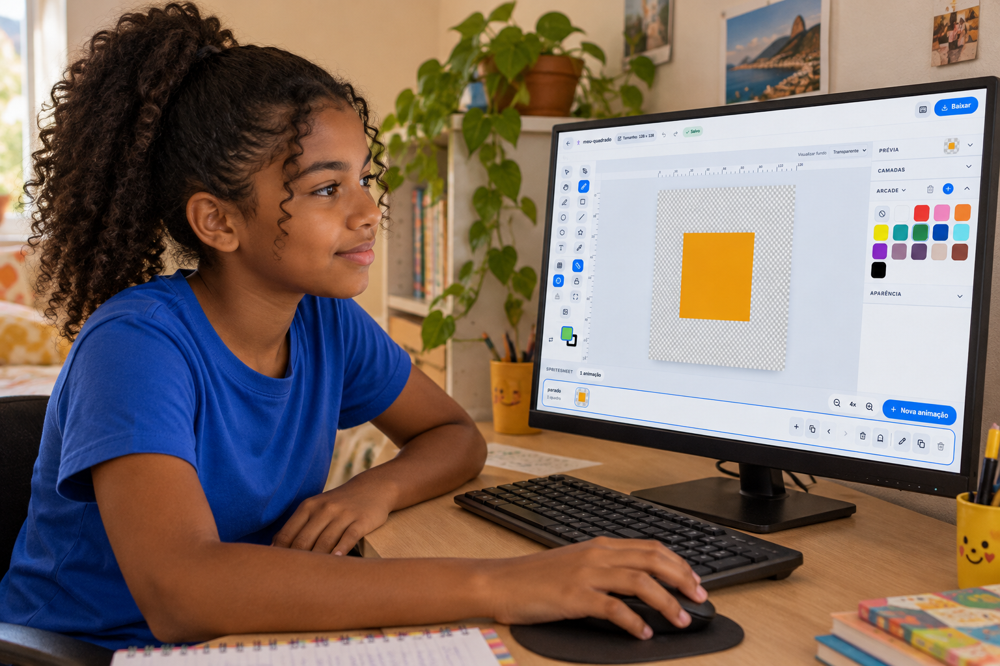
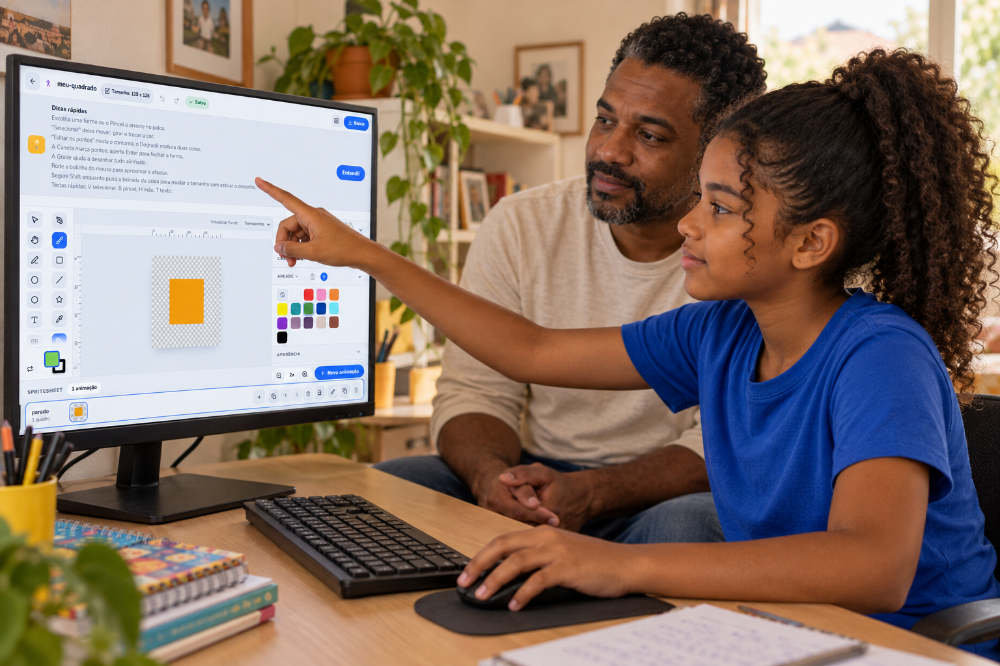
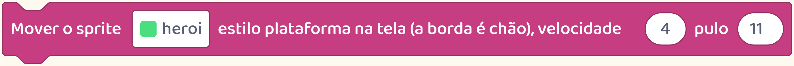
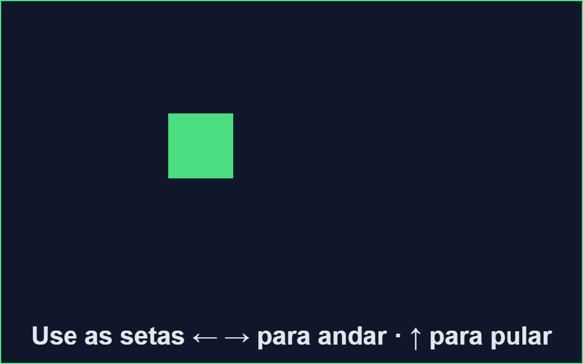
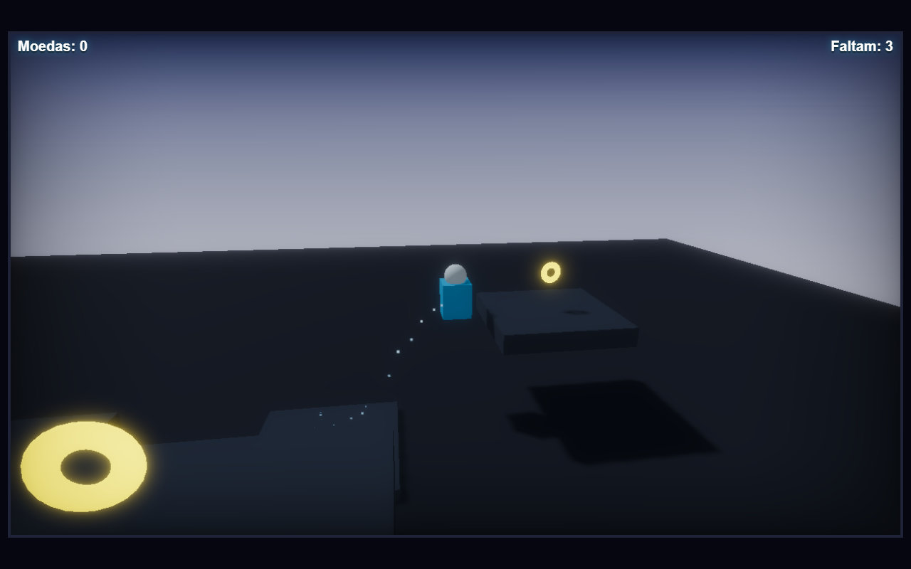
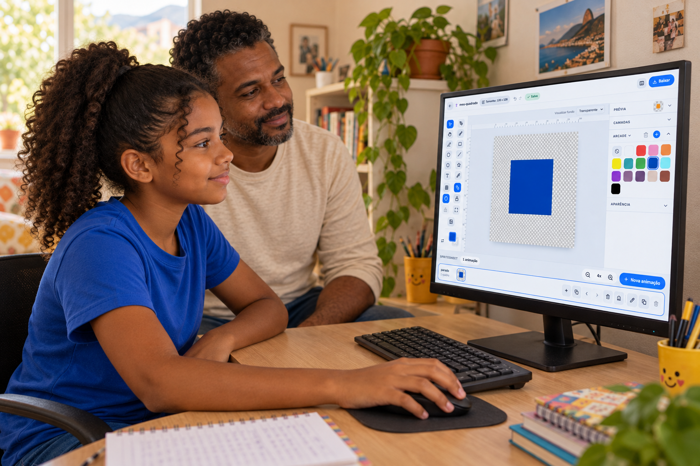

Teste em casa
Os botões mudam de lugar. Surgem programas novos.
Seu filho também pode aprender como começar a explorar uma ferramenta.

Os botões mudam de lugar. Surgem programas novos.
Seu filho também pode aprender como começar a explorar uma ferramenta.

Quando tudo parece novo, ajuda escolher uma tarefa pequena.
Por exemplo: abrir um desenho e mudar a cor de uma parte.
Ele pode procurar a ferramenta, testar e ver o resultado.

Se não encontrar, consultar a explicação ou pedir ajuda também faz parte de aprender.
Na criação de jogos, isso acontece ao experimentar novas possibilidades.

A criança escolhe uma coisa para fazer e aprende os comandos necessários para ela.
Num jogo visto de lado, o personagem pode andar e pular sobre o chão.

Quem cria aprende a montar e testar esses movimentos.
Num jogo em 3D, também é preciso pensar na profundidade e na posição da câmera.

O objetivo passa a ser alcançar outras plataformas, e surgem novas coisas para aprender.
Criar jogos oferece oportunidades de usar o que já sabe e buscar o que ainda falta.

Siga o perfil para conhecer esse processo.